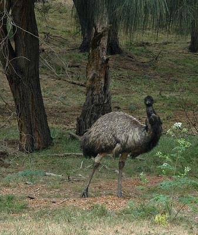

I learned how to create onclick JavaScript events and onmouseover JavaScript events
Hover your mouse over the image until it shows an emu. Then click on the emu button.
Source of emu photo By Timothy Finley on Flickr
Source of ostrich photo By Neil Turner on Flickr
Did you choose the emu? :))